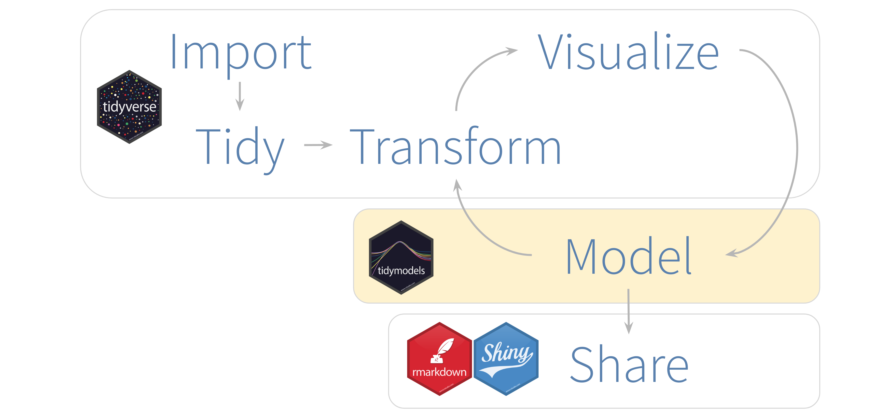
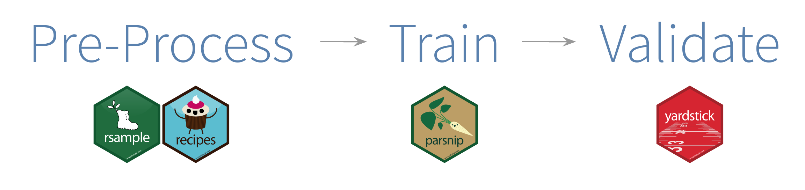
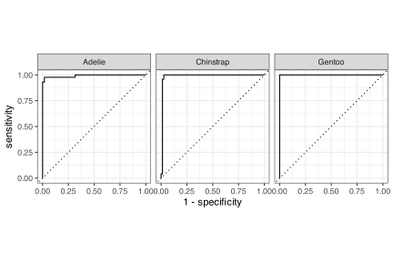
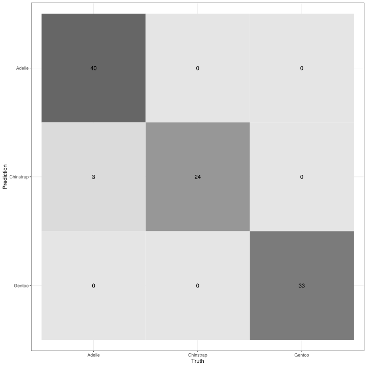

11 Introduction to Tidymodels
R contains a universe of packages that each have their own unique interfaces (functions and argument names) and return types. For instance, simple linear regression in R is traditionally performed using lm() from the stats package, but there’s also the option to use glm, glmnet or other packages. Similarly for random forest - a user has the option to use ranger, randomForest, or xgboost amongst other options. Having such a bevy of options is great, but it also adds complications to the modelling process.
If only there was a unifying interface available to help simplify and streamline the modelling process. This is the purpose of tidymodels, which provides a unified interface for modeling that abides by the tidy philosphy and that fits nicely into the tidyverse. From pre-processing to model training to prediction to validation, tidymodels provides the necessary tools to perform many modelling tasks.
It is important to understand that the tidymodels packages do not aim to implement the algorithms themseves, rather they provide the interface to bring together many disparate approaches under the same roof. And as a result of this, model fitting tasks are easier to carry out. In the grand scheme of things, here’s where tidymodels tends to fit into a data analysis project.
Now, modelling can be broken down into several sub-tasks, and tidymodels recognizes this by providing different packages for different tasks. So tidymodels can be considered a metapackage - when you load tidymodels, several packages are in fact loaded including rsample, recipes, parsniup and yardstick. Each of these packages has their own role to play in the modelling process.
rsampleis intended for sampling and subsetting tasks (such as splitting the data into test and train sets)recipesallows the user to easily and neatly record the steps to take in data pre-processingparsnipprovides a common interface for model training to help standardize the interface for model fitting and outputyardstickgives access to model performance measures
The following diagram shows where each package comes into play in a general workflow for modelling using tidymodels.

11.1 An example using the penguins dataset
We will now explore the tidymodels functions using the penguins dataset that we introduced and used in Regression in Tidymodels.
11.1.1 Load packages
Note that tidymodels automatically loads some very useful tidyverse packages for us, including fan favourites like dplyr and ggplot2.
library(tidymodels)11.1.2 Simplify dataset
To keep the focus on learning how to use tidymodels, we will work with a simplified version of the dataset in which we will only use the complete cases/rows in the penguins dataset
penguins <- penguins %>%
filter(complete.cases(.))
head(penguins)#> # A tibble: 6 × 7
#> species island bill_length_mm bill_depth_mm flipper_length_mm
#> <fct> <fct> <dbl> <dbl> <int>
#> 1 Adelie Torgersen 39.1 18.7 181
#> 2 Adelie Torgersen 39.5 17.4 186
#> 3 Adelie Torgersen 40.3 18 195
#> 4 Adelie Torgersen 36.7 19.3 193
#> 5 Adelie Torgersen 39.3 20.6 190
#> 6 Adelie Torgersen 38.9 17.8 181
#> # ℹ 2 more variables: body_mass_g <int>, sex <fct>and we will only use the species, bill_length_mm, bill_depth_mm, and flipper_length_mm variables.
penguins <- penguins %>%
select(c(species, bill_length_mm, bill_depth_mm, flipper_length_mm))11.1.3 Data sampling
After fitting a model, make sure it is a good model. That is, don’t forget to test how the model performs. For this reason, it is customary to split data into distinct training and test sets at the onset. The training data is used to fit the model and the test data is used to assess model performance.
The initial_split() function from the rsample package is what we will use to split our dataset into a training and test set. The function by default uses 3/4 of data for training and reserves the remaining 1/4 for testing. Use the prop argument to change the proportion used for training. Note that this function gives a rsplit object and not a data frame and the output of the object shows the number of rows used for testing, training and the grand total.
set.seed(123) # For reproduciblity, as when we split the data below
penguins_split <- initial_split(penguins, prop = 0.7)
penguins_split#> <Training/Testing/Total>
#> <233/100/333>To see what observations were used for training and testing, use the training() and testing() functions respectively.
penguins_split %>%
training() %>%
glimpse()#> Rows: 233
#> Columns: 4
#> $ species <fct> Gentoo, Adelie, Gentoo, Chinstrap, Adelie, Chinst…
#> $ bill_length_mm <dbl> 59.6, 34.4, 45.2, 49.0, 41.4, 51.0, 44.9, 51.1, 5…
#> $ bill_depth_mm <dbl> 17.0, 18.4, 15.8, 19.5, 18.5, 18.8, 13.8, 16.5, 1…
#> $ flipper_length_mm <int> 230, 184, 215, 210, 202, 203, 212, 225, 210, 211,…Now, we’ll create a data frame for each of the training and test set:
train_data <- training(penguins_split)
test_data <- testing(penguins_split)11.1.4 Pre-processing
The main goal of this step is to use data transformations to make the data suitable for modeling. Most transformations that one required for standard data analysis tasks can be achieved by dplyr, or another tidyverse package.
11.1.4.1 The pre-processing interface
Before training the model, a recipe can be used to carry out the pre-processing required by the model.
The recipe() has two main arguments: a formula (with the same format as when doing data = train_data here.
In our example, suppose that our goal is to predict penguin species from bill length, bill depth and flipper length, then our recipe function would look as follows:
recipe(species ~ ., data = train_data)The point of recipe is to be a more general purpose formula. A number of packages are not formula-based. The ever-popular glmnet() function is one example because it takes in matrices for the x and y variables instead of a formula. So a recipe is useful because you can use a package like glmnet by following the same standard formula-based recipe format and simply specify later on in the modelling stage that the you would like to use glmnet.
Now, after saying that you are making a recipe by way of the recipe() function, simply specify the transformations that you want to apply to your data in the necessary steps. Each data transformation is one step and all of the available pre-processing transformations all have the prefix of step_. Now, while there are many step functions available (here’s a list), we will only use the following three in our example.
step_corr()to remove variables which have large absolute correlations with othersstep_center()to normalize numeric data to have a mean of zerostep_scale()to normalize numeric data to have a standard deviation of one
One of the advantages of having these pre-processing steps is that they help to simplify concepts that are difficult or a pain to enforce in coding. For example, centering could be a nuisance to implement from scratch because we would first have to calculate statistics (variable averages) from the training data and then use them on both the training and on the test data. Note that centering should not be done on the test data, rather on the training data to avoid data leakage (contamination of the test data by using statistics from the test data). In a recipe, the the estimation of the variable means using the training data and the application of these to center new data sets is done automatically, under the hood, and so spares the coder from having to manually implement it. The situation is similar for scaling numeric data (step_scale()).
Another useful feature of the tidymodels pre-processing interface is that each step can be applied to one specified variable, a group of variables, or all variables. The all_predictors() and all_outcomes() functions are particularly convenient to help minimize the amount of typing you need to do. For instance, if you wanted to apply step_center() to only the predictor variables, simply type step_center(all_predictors()) instead of listing out each and every predictor in the step function.
Now, let’s try this all out on our example.
penguins_recipe <- recipe(species ~ ., data = train_data) %>%
step_corr(all_predictors()) %>%
step_center(all_predictors(), -all_outcomes()) %>%
step_scale(all_predictors(), -all_outcomes())To summarize, we obtained a recipe object, penguins_recipe, by putting the recipe() and step functions together on our training data that we had ready to go from sampling.
Now, to get the recipe details, simply call the recipe object. The operations section details what pre-processing steps we’ve applied to the data. Notice that the steps shown here are in the order that they were input into the recipe and they specify the variables used in each step.
penguins_recipe11.1.5 Model Training
Recall that in R, the same type of model could be fit using several different packages, and each such package typically has it’s own style of interface. Two popular packages to fit random forest models are ranger and randomForest. One way that their interfaces differ is in the parameter name for the number of trees - ranger() has the parameter num.trees, whereas in randomForest has parameter ntree. Such differences do not make it simple to run the model in the other package.
Tidymodels created an single interface that supports the usage of both models. Moreover, this general interface supports an even wider range of functions that use perform random forest. The key part that points to the function and package to be used is the engine.
Let’s see how this works in practice. In the below example, we’ll use the general rand_forest() function from tidymodels. In there, we can specify the number of trees by using the trees argument. Then, in set_engine() we specify that we want to use ranger’s version of random forest. Notice this follows the model specification format introduced in the [Regression in Tidymodels]
penguins_ranger <- rand_forest(trees = 100, mode = "classification") %>%
set_engine("ranger")Now, if we wanted to use a different package’s version of random forest, we could easily do that by simply swapping out the engine. To try this out, let’s use randomForest instead of ranger.
penguins_rf <- rand_forest(trees = 100, mode = "classification") %>%
set_engine("randomForest")For the remainder of this tutorial, we’ll stick with using ranger for simplify. At this stage, we’re ready to pre-process and model. The first task of those two is to apply our recipe before we train and test our model, in that we must
Process the recipe using the training set.
Use the recipe on the training set to get the finalized predictor set.
Use the recipe on the predictor set to get the test set.
A workflow can be used to pair model and processing tasks together. When different recipes are needed for different models, this is very useful so that you don’t have to keep track of separate model and recipe objects in your workspace. Hence, training and testing different workflows becomes easier.
For our example, we’ll try tidy model’s workflows package to pair our model and our recipe together.
penguins_wflow <- workflow() %>%
add_model(penguins_ranger) %>%
add_recipe(penguins_recipe)
penguins_wflow#> ══ Workflow ═════════════════════════════════════════════════════════════════
#> Preprocessor: Recipe
#> Model: rand_forest()
#>
#> ── Preprocessor ─────────────────────────────────────────────────────────────
#> 3 Recipe Steps
#>
#> • step_corr()
#> • step_center()
#> • step_scale()
#>
#> ── Model ────────────────────────────────────────────────────────────────────
#> Random Forest Model Specification (classification)
#>
#> Main Arguments:
#> trees = 100
#>
#> Computational engine: rangerAfter that, we’re ready to fit the model to our training data. The fit() function is what we will use to prepare the the recipe and train the model from the finalized predictors.
penguins_fit <- penguins_wflow %>% fit(data = train_data)The resulting object contains both the recipe and fitted model. To extract the model, use the helper function of extract_fit_parsnip(), and to extract the recipe object, use extract_recipe(). We extract the model object below.
extract_fit_parsnip(penguins_fit)#> parsnip model object
#>
#> Ranger result
#>
#> Call:
#> ranger::ranger(x = maybe_data_frame(x), y = y, num.trees = ~100, num.threads = 1, verbose = FALSE, seed = sample.int(10^5, 1), probability = TRUE)
#>
#> Type: Probability estimation
#> Number of trees: 100
#> Sample size: 233
#> Number of independent variables: 3
#> Mtry: 1
#> Target node size: 10
#> Variable importance mode: none
#> Splitrule: gini
#> OOB prediction error (Brier s.): 0.02954337One important thing to notice is that that if we wanted to use the randomForest model instead of the ranger model, all we’d need to do is replace the engine in the model specification; the rest of the code remains the same. We shall leave it to the reader to try this on their own and marvel at the beauty of having such a unifying interface.
11.1.6 Use a trained workflow to predict
Up to this point we have
Built the model (
penguins_ranger)Created a pre-processing recipe (
penguins_recipe),Paired the model and recipe (
penguins_wflow), andTrained our workflow using
fit().
So the next step is to use the trained workflow, penguins_fit, to predict with the test data. This is easily done with a call to predict().
predict(penguins_fit, test_data)#> # A tibble: 100 × 1
#> .pred_class
#> <fct>
#> 1 Adelie
#> 2 Adelie
#> 3 Adelie
#> 4 Chinstrap
#> 5 Adelie
#> 6 Adelie
#> # ℹ 94 more rowsIf you wanted to obtain a probability for each predicted value, then simply set the type = prob in predict(). This will yield a tibble with one column per outcome type and the corresponding predicted probability for each value to be each type of outcome. Then, to add the predicted values as a new column on the test data, use the bind_cols() function from dplyr.
penguins_predp <- penguins_fit %>%
predict(test_data, type = "prob")To add the predicted values as a new column on the test data, you can use the bind_cols() function from dplyr.
bind_cols(test_data, penguins_predp) %>%
head() # View first six rows of output#> # A tibble: 6 × 7
#> species bill_length_mm bill_depth_mm flipper_length_mm .pred_Adelie
#> <fct> <dbl> <dbl> <int> <dbl>
#> 1 Adelie 39.5 17.4 186 0.910
#> 2 Adelie 40.3 18 195 0.960
#> 3 Adelie 38.7 19 195 0.964
#> 4 Adelie 46 21.5 194 0.286
#> 5 Adelie 35.9 19.2 189 0.997
#> 6 Adelie 38.2 18.1 185 1
#> # ℹ 2 more variables: .pred_Chinstrap <dbl>, .pred_Gentoo <dbl>Alternatively, we can use the augment() function to obtain the predicted probabilities and add them to the test data in a one-liner.
penguins_aug <- augment(penguins_fit, test_data)
penguins_aug#> # A tibble: 100 × 8
#> species bill_length_mm bill_depth_mm flipper_length_mm .pred_class
#> <fct> <dbl> <dbl> <int> <fct>
#> 1 Adelie 39.5 17.4 186 Adelie
#> 2 Adelie 40.3 18 195 Adelie
#> 3 Adelie 38.7 19 195 Adelie
#> 4 Adelie 46 21.5 194 Chinstrap
#> 5 Adelie 35.9 19.2 189 Adelie
#> 6 Adelie 38.2 18.1 185 Adelie
#> # ℹ 94 more rows
#> # ℹ 3 more variables: .pred_Adelie <dbl>, .pred_Chinstrap <dbl>, …We can see from the first couple of rows shown that our model predicted the species correctly to be Adelie (in the .pred_class column) because the .pred_Adelie probabilities are by far the largest of the three predicted probabilities for each row. So while we can informally say that our model is doing well for predicting, how can we formally assess this? We would like to calculate a metric (well, probably more than one) to tell us how well our model predicts the species of penguins.
11.1.7 Model Validation
The metrics() function from the yardstick package is helps to assess model performance. As suggested by its name, it will output some metrics, and as an added bonus, these will be automatically selected for the type of model that you construct. The input for this function is a tibble that contains the actual values and the predicted values. This way we can compare how close the model estimates are to the truth. To serve this purpose, we can use penguins_aug.
penguins_aug %>%
metrics(truth = species, .pred_Adelie:.pred_Gentoo, estimate = .pred_class)#> # A tibble: 4 × 3
#> .metric .estimator .estimate
#> <chr> <chr> <dbl>
#> 1 accuracy multiclass 0.97
#> 2 kap multiclass 0.954
#> 3 mn_log_loss multiclass 0.123
#> 4 roc_auc hand_till 0.993Let’s briefly go through the metrics that were generated. Accuracy is simply the proportion of values that are predicted correctly, while kappa is similar to accuracy, but is normalized by the accuracy that would be expected by chance (you can think of it as a measure that compares observed accuracy to expected accuracy from random chance alone). For our example, both the accuracy and kappa value estimates are extremely high (near to the upper limit of 1) and similar in value, indicating that our model performs very well for prediction on the test data. Log loss is a measure of the performance of a classification model and a perfect model has a log loss of 0, so our model performs pretty well in that respect. Finally, roc_auc is the area under ROC curve and we’ll explain this very shortly so stay tuned (for now, just note that a value close to 1, like we have, is the goal). All in all, our model fairs very well.
Since it is often not enough to rely purely on one number summaries of model performance, we’ll also look to graphical, curve-based metrics. We’ll walk through producing the classic ROC curve, which is computed using roc_curve() and roc_auc() from yardstick.
To get ourselves an ROC curve, we need to input the actual values and the columns of predicted class probabilities into roc_curve(). We finish off by piping into the autoplot() function.
penguins_aug %>%
roc_curve(truth = species, .pred_Adelie:.pred_Gentoo) %>%
autoplot()
Notice that the x-axis displays 1 - specificity, which is otherwise known as the false positive rate. So on this plot, we can visualize the trade-off between the false positive (1 - specificity) and the true positive (sensitivity) rates. Since the best classification would be where all positives are correctly classified as positive (sensitivity = 1), and no negatives are incorrect classified as positive (specificity = 0), curves closer to the top left corner (and, hence, an area under the curve of about 1) is what we’re hoping for.
So, we can see that the curves for each of our species are looking pretty close to perfection (save for Adelie, which still does very well). To estimate the area under the curves, we can use roc_auc (or look to the summary of our metrics above for this very value).
penguins_aug %>%
roc_auc(truth = species, .pred_Adelie:.pred_Gentoo)#> # A tibble: 1 × 3
#> .metric .estimator .estimate
#> <chr> <chr> <dbl>
#> 1 roc_auc hand_till 0.993As expected, the estimated area is very close to 1, indicating near-perfect discrimination.
The yardstick package also offers other standard tools for model assessment like a confusion matrix, from which we can inspect the counts of correct classifications and miclassifications.
penguins_aug %>%
conf_mat(truth = species, estimate = .pred_class)#> Truth
#> Prediction Adelie Chinstrap Gentoo
#> Adelie 40 0 0
#> Chinstrap 3 24 0
#> Gentoo 0 0 33We could even combine this with autoplot() to get a nice heatmap visualization.
penguins_aug %>%
conf_mat(truth = species, estimate = .pred_class) %>%
autoplot("heatmap")
The diagonal shows the counts of correct predictions for each species, while the off-diagonal shows the counts of model misclassifications. As the metrics have indicated, our model performed magnificently on the test set as there was only three misclassifications of Adelie penguins as Chinstrap.
11.2 Concluding remarks
In this vignette, we introduced tidymodels and illustrated how to its packages work together by way of example. Since this was an elementary example, so use this as a starting point and explore what more can be done with this wonderful set of packages. And yet, however wonderful they are, you may have already noticed that there are limitations like the glaring lack of a set of post-processing tools to refine the results. We fill this gap for epidemiological modelling with frosting. This will be formally introduced in a later chapter, so stay tuned!
🐧 🐧 🐧 🐧 🐧 🐧 🐧 🐧 🐧 🐧 🐧 🐧 🐧 🐧 🐧 🐧 🐧 🐧 🐧 🐧 🐧 🐧 🐧 🐧 🐧 🐧
11.3 Attribution
This Chapter was largely adapted from A Gentle Introduction to Tidymodels as well as Tidymodels - Getting Started and Tidymodels. The diagrams are from A Gentle Introduction to Tidymodels and based on R for Data Science.
🐧 🐧 🐧 🐧 🐧 🐧 🐧 🐧 🐧 🐧 🐧 🐧 🐧 🐧 🐧 🐧 🐧 🐧 🐧 🐧 🐧 🐧 🐧 🐧 🐧 🐧